DISTINCTIO VIII — SUBTILITATES GEOMETRICAE & FLOS (1225)¶
Geometrical Subtleties of the Pentagon and Decagon, Al-Jabr Quartic, and the Flos Imperial Cubic
Source Text: fibonacci:pg-8, fibonacci:flos (Boncompagni Vol. II, pp. 207–234 · fol. 134r–148v & Flos) · Latin (1220 / Boncompagni 1862) · Summary · GEOMETOR Notes

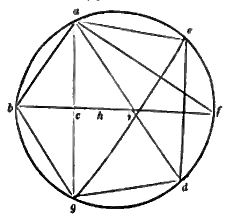

Distinctio VIII — Subtilitates Geometricae: Pentagon, Decagon & Al-Jabr¶
Latin Locus: Distinctio VIII — De Subtilitatibus Geometricis (pp. 207–226) · Commentary: Notes on Abū Kāmil’s Quartic & Euclid XIII.10
I wish to find the pentagonal side of a circle of diameter \(10\). Let there be a circle abgde, and in it an equilateral and equiangular pentagon abgde; let the chord ag of a pentagonal angle be drawn, and the diameter bf bisecting chord ag at point c. Therefore angle bca is right; I set diameter fb to \(10\) and pentagonal side ab to one res, and draw line af. Triangle baf is right-angled, lying in semicircle baf, with perpendicular ac drawn from the right angle to the base. Hence fb times cb equals ba squared. Let us therefore multiply ba (res) by itself, giving a census; dividing by fb (\(10\)) yields \(\frac{1}{10}\) census for cb. Subtracting the square on cb, the square of \(\frac{1}{10}\) census, from the census leaves one census minus \(\frac{1}{100}\) census census for the square on ac. Since ag is double ac, the square on ag is four times the square on ac, namely \(4\) census minus \(\frac{1}{25}\) census census. Since quadrilateral agde is inscribed in circle abgd, de times ga plus gd times ea equals the product of its two diagonals ge and da. Each diagonal equals ag, being a pentagonal chord; so de times ag plus gd times ae equals ag squared, \(4\) census minus \(\frac{1}{25}\) census census. Subtracting the census from gd times ae (res times res) leaves \(3\) census minus \(\frac{1}{25}\) census census for de times ag. Dividing \(3\) census minus \(\frac{1}{25}\) census census by res (de) yields \(3\) res minus \(\frac{1}{25}\) cube for chord ga. Squaring \(3\) res minus \(\frac{1}{25}\) cube gives \(9\) census plus \(\frac{1}{625}\) cube-of-cube minus \(\frac{6}{25}\) census census, equal to \(4\) census minus \(\frac{1}{25}\) census census. Adding \(\frac{6}{25}\) census census to both sides and subtracting \(4\) census leaves \(5\) census plus \(\frac{1}{625}\) cube-of-cube equal to \(\frac{1}{5}\) census census. Dividing by census gives \(5\) drachmae plus \(\frac{1}{625}\) census census equal to \(\frac{1}{5}\) census. Multiplying by \(625\) yields one census census plus \(3125\) drachmae equal to \(125\) census. Multiply half the census, \(62\frac{1}{2}\), by itself, giving \(3906\frac{1}{4}\); cast out \(3125\), leaving \(781\frac{1}{4}\). Subtract its root from \(62\frac{1}{2}\), leaving \(62\frac{1}{2} - \sqrt{781\frac{1}{4}}\) for the census, whose root is the res, namely the pentagonal side.
Otherwise: on diameter bf, let us take center h and add to radius bh its fourth part hi, so bi is \(6\frac{1}{4}\). As proved in Euclid’s Thirteenth Book, bi is to ic as ic is to ih; hence bi is to ih as the square on bi to that on ci. For bi is five times ih, so the square on bi, \(39\frac{1}{16}\), is five times the square on ci; thus ci is \(\sqrt{7\frac{13}{16}}\). Subtracting this from bi leaves \(6\frac{1}{4} - \sqrt{7\frac{13}{16}}\) for bc. Since fb is to ba as ba to bc, ba squared equals fb (\(10\)) times bc, that is, \(10\) times \(6\frac{1}{4} - \sqrt{7\frac{13}{16}}\),
f. 0215 · p. 208

giving \(62\frac{1}{2} - \sqrt{781\frac{1}{4}}\) for the square on ba, whose root is pentagonal side ab—the root of the remainder between \(\sqrt{781\frac{1}{4}}\) and \(62\frac{1}{2}\). That remainder slightly exceeds \(34\frac{1}{2}\), whose approximate root is \(6 - \frac{1}{8}\); and this is ab by approximation.
And if you wish to know the side of a decagon in a circle of diameter \(10\), divide semicircle arc abcf into five equal parts ab, bc, cd, de, ef; draw chords ab, bc, cd, de, ef, each a decagon side; and join ac and df, each a pentagon side. Draw lines ad and cf. Since arc ac equals arc fd, adding common arc cd makes arc acd equal to arc cdf; hence ad equals cf. In circle abg, quadrilateral cafd has diagonals cf and ad; thus af times cd plus ac times fd equals cf times ad, that is, cf squared. This understood, set decagon side cd as res, and multiply it by af (\(10\)), giving \(10\) res; add ca times df, namely ca squared, found above as \(62\frac{1}{2} - \sqrt{781\frac{1}{4}}\). We get \(10\) res plus \(62\frac{1}{2} - \sqrt{781\frac{1}{4}}\) drachmae, equal to cf squared. Add to this the square on ca, \(62\frac{1}{2} - \sqrt{781\frac{1}{4}}\), giving \(10\) res plus \(125\) drachmae minus two roots of \(781\frac{1}{4}\), which are \(\sqrt{3125}\), equal to \(100\) drachmae—the square of diameter af, since angle fca in semicircle abf is right. Add \(\sqrt{3125}\) to both sides and subtract \(125\) from both, leaving \(10\) res equal to \(\sqrt{3125} - 25\) drachmae. Divide \(\sqrt{3125} - 25\) by \(10\), yielding \(\sqrt{31\frac{1}{4}} - 2\frac{1}{2}\) drachmae for the res, namely the decagon side cd.
Otherwise I shall find the decagon and pentagon sides from a known diameter. Let the diameter of circle abg be \(10\); take center i, draw perpendicular ig, bisect if at h, draw gh with hl equal to gh, and join gl. I say il is the decagon side and gl the pentagon side in circle abfg. This is proved thus: since fi is bisected at h and il is added to it, il times fl plus hi squared equals hl squared. Since gh equals hl, li times fl plus hi squared equals hg squared, which equals the squares on gi and ih. Subtracting the square on ih in common leaves il times fl equal to gi squared. Since fi equals gi, il times fl equals fi squared; hence lf is to fi as fi is to il. Thus line fl is divided in extreme and mean ratio, with greater part fi the hexagon side and lesser part il the decagon side, as in Euclid. Since the pentagon side equals in square the hexagon and decagon sides (gi and il), gl is the pentagon side. To work this out in numbers, let diameter af be \(10\); then gi is \(5\) and ih is \(2\frac{1}{2}\). Squaring gi and ih,
f. 0216 · p. 209

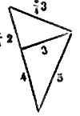
gives \(25\) and \(6\frac{1}{4}\), whose sum is \(31\frac{1}{4}\) for the square on gh, and hence on hl. Therefore hl is \(\sqrt{31\frac{1}{4}}\). Subtracting hi, which is \(2\frac{1}{2}\), leaves \(\sqrt{31\frac{1}{4}} - 2\frac{1}{2}\) for il, the decagon side, as we found above. And if we square il and gi, we obtain \(62\frac{1}{2} - \sqrt{781\frac{1}{4}}\) for the square of gl, the pentagon side, as we said above.
And when you wish to know the side of a pentagon circumscribing a known circle, make known circle thm of diameter \(10\); let pentagon abcdf circumscribe it. From center e join ea, eb, eh, and draw chord th, the inscribed pentagon side, bisected by eb at right angles at l. The square of chord th is \(62\frac{1}{2} - \sqrt{781\frac{1}{4}}\); hence the square of its half tl is one fourth, \(15\frac{5}{8} - \sqrt{48\frac{53}{64}}\). Subtracting this from the square of radius et (\(25\)) leaves \(9\frac{3}{8} + \sqrt{48\frac{53}{64}}\) for the square on el. Since triangle eta is similar to triangle etl (both right-angled, with angles aet and tel equal), at is to te as tl is to le. Since ab is double at and th double tl, ab is to te as th to le; hence ab times el equals te times th. Set ab as res, and multiply its census by el squared, \(9\frac{3}{8} + \sqrt{48\frac{53}{64}}\), giving \(9\frac{3}{8}\) census plus the root of \(48\frac{53}{64}\) census census, equal to te squared (\(25\)) times th squared (\(62\frac{1}{2} - \sqrt{781\frac{1}{4}}\)), which is \(1562\frac{1}{2} - \sqrt{488281\frac{1}{4}}\). Reduce everything to one census by multiplying by \(\frac{6}{25} - \sqrt{\frac{4}{125}}\) drachmae. Multiplying \(\frac{6}{25} - \sqrt{\frac{4}{125}}\) into \(9\frac{3}{8}\) census plus the root of \(48\frac{53}{64}\) census census yields one census. Then multiply \(1562\frac{1}{2} - \sqrt{488281\frac{1}{4}}\) by \(\frac{6}{25} - \sqrt{\frac{4}{125}}\) drachmae, giving \(375 + \sqrt{15625} - \sqrt{78125} - \sqrt{28125}\) drachmae, which I make \(500 - \sqrt{200000}\). Thus the census equals \(500 - \sqrt{200000}\), whose root is ab, a side of the pentagon circumscribing the circle of diameter \(10\).
Otherwise, more readily: since in right triangle etb perpendicular tl is drawn from the right angle, be squared is to et squared as et squared to el squared; hence be squared times el squared equals et squared times itself, \(625\). Therefore I set be as res, square it to census, and multiply by el squared (\(9\frac{3}{8} + \sqrt{48\frac{53}{64}}\)), giving \(9\frac{3}{8}\) census plus the root of \(48\frac{53}{64}\) census census, equal to \(625\) drachmae. Reducing to one census—multiplying \(625\) by \(\frac{6}{25} - \sqrt{\frac{4}{125}}\)—yields \(150 - \sqrt{12500}\) for the census, be squared. Subtracting the square on et (\(25\)) leaves \(125 - \sqrt{12500}\) for the square on tb; four times this, \(500 - \sqrt{200000}\), is the square of the whole ab, as found above.
And if you wish to find the measure of the side of a decagon circumscribing a circle of diameter \(10\), upon circle def of diameter \(10\) let there be described two sides ab and bg of a decagon circumscribing it and tangent to circle
f. 0217 · p. 210

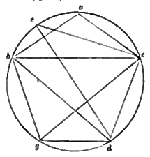
def at points d and e; join de, ha, hb, and hd, h being the center. By what was said in the preceding figure, ab is to dh as de is to hl. Hence ab squared times hl squared equals de squared times dh squared. Chord de is the inscribed decagon side in def, found as \(\sqrt{31\frac{1}{4}} - 2\frac{1}{2}\); its half is \(\sqrt{7\frac{13}{16}} - 1\frac{1}{4}\), whose square is \(9\frac{3}{8} - \sqrt{48\frac{53}{64}}\). Subtracting this from dh squared (\(25\)) leaves \(15\frac{5}{8} + \sqrt{48\frac{53}{64}}\) for hl squared. Multiplying this by ab squared (census) gives \(15\frac{5}{8}\) census plus the root of \(48\frac{53}{64}\) census census, equal to dh squared (\(25\)) times dl squared, which product is \(937\frac{1}{2} - \sqrt{488281\frac{1}{4}}\). Reduce all to one census by multiplying by \(\frac{2}{25} - \sqrt{\frac{4}{3125}}\): multiplying this into \(15\frac{5}{8}\) census plus the root of \(48\frac{53}{64}\) census census yields one census; and multiply \(937\frac{1}{2} - \sqrt{488281\frac{1}{4}}\) by \(\frac{2}{25} - \sqrt{\frac{4}{3125}}\), and the census will equal \(75 + \sqrt{625} - \sqrt{3125} - \sqrt{1125}\) drachmae, all which is \(100 - \sqrt{8000}\), whose root is side ab, one of the sides of the decagon circumscribing the circle of diameter \(10\).
Otherwise, make hb a res, square it to census, and multiply by hl squared (\(15\frac{5}{8} + \sqrt{48\frac{53}{64}}\)), giving \(15\frac{5}{8}\) census plus the root of \(48\frac{53}{64}\) census census, equal to dh squared squared, namely \(625\) drachmae. Multiply all by \(\frac{2}{25} - \sqrt{\frac{4}{3125}}\), so the census equals \(50 - \sqrt{500}\) drachmae, the square on hb. Subtracting hd squared (\(25\)) leaves \(25 - \sqrt{500}\) for db squared; four times this, \(100 - \sqrt{8000}\), is the square on ab, as found above.
Having shown how from a known diameter to find the inscribed and circumscribed sides of the pentagon and decagon, it remains to teach how from those sides, when known, to find the diameter—as if we say: the chord of one fifth of a circle is \(10\), how long is the diameter? Set pentagon abgde with each side \(10\); circumscribe it with a circle of diameter dc, and join ge, eb, bd. Quadrilateral ebgd lies in circle abgd; hence eb times dg plus gb times de equals eg times db, or eg squared. Set eb as res and multiply by dg, giving \(10\) res; add bg times de (\(100\)), giving \(100\) plus \(10\) res equal to eg squared (since eg equals eb, a res); thus \(100\) plus \(10\) res equals a census. Hence res is \(\sqrt{125} + 5\) drachmae, the length of ge. Its half is gl, \(\sqrt{31\frac{1}{4}} + 2\frac{1}{2}\) drachmae; squaring it gives \(37\frac{1}{2} + \sqrt{781\frac{1}{4}}\). Subtracting this from gd squared (\(100\)) leaves \(62\frac{1}{2} - \sqrt{781\frac{1}{4}}\) for dl squared. Hence cd times dl equals de squared, since in triangle ced perpendicular el is drawn from the right angle to the base. Setting diameter cd as res, multiplying its census by dl squared gives \(62\frac{1}{2}\) census minus the root of \(781\frac{1}{4}\) census census, equal to de squared squared, \(10000\) drachmae—an equation we can
f. 0218 · p. 211

also reach otherwise. Since in a circle of diameter \(10\) the inscribed pentagon side is \(\sqrt{62\frac{1}{2} - \sqrt{781\frac{1}{4}}}\), and I want the pentagon side to be \(10\) and seek its diameter, \(62\frac{1}{2} - \sqrt{781\frac{1}{4}}\) is to \(100\) (its diameter squared) as \(100\) (the given side squared) to the unknown diameter squared. Hence if we set the unknown diameter as res and multiply its census by \(62\frac{1}{2} - \sqrt{781\frac{1}{4}}\), we likewise get \(62\frac{1}{2}\) census minus the root of \(781\frac{1}{4}\) census census, equal to \(100\) times \(100\), namely \(10000\) drachmae, as found above. Reducing this to one census—multiplying all you have by \(\frac{1}{50} + \sqrt{\frac{1}{12500}}\) drachma—gives \(200 + \sqrt{8000}\) for the square on diameter cd. Hence its root, about \(17\), will be the sought diameter dc.
Otherwise: since the pentagonal-angle chord and the one-fifth chord equal in square five times the hexagon side (the radius), as in Euclid’s Fourteenth Book, square eg (\(\sqrt{125} + 5\) drachmae), giving \(150 + \sqrt{12500}\). Add the square of side gd (\(100\)), giving \(250 + \sqrt{12500}\), five times the radius squared; its fifth part is \(50 + \sqrt{500}\) for the radius squared; and four times that, \(200 + \sqrt{8000}\), is the diameter squared, as found above.
Likewise, if you wish to find the diameter of a circle whose one-tenth chord is \(10\): that chord is to its diameter as any similar chord is to its diameter, and in a circle of diameter \(10\) the decagon chord is \(\sqrt{31\frac{1}{4}} - 2\frac{1}{2}\). If you set that unknown diameter as res and multiply it by \(\sqrt{31\frac{1}{4}} - 2\frac{1}{2}\), you get the root of \(31\frac{1}{4}\) census minus \(2\frac{1}{2}\) res, equal to \(100\), the product of the known chord (\(10\)) and known diameter. Add \(2\frac{1}{2}\) res to both sides, giving \(100\) plus \(2\frac{1}{2}\) res equal to the root of \(31\frac{1}{4}\) census. Square both sides, and \(31\frac{1}{4}\) census equals \(6\frac{1}{4}\) census plus \(10000\) drachmae minus \(500\) roots. Subtract \(6\frac{1}{4}\) census and add \(500\) res to both sides, giving \(25\) census plus \(500\) res equal to \(10000\) drachmae. Dividing by \(25\) gives census plus \(20\) res equal to \(400\) drachmae; by algebra, res is \(\sqrt{500} + 10\), the sought diameter.
Otherwise: let circle abcdefg be drawn, and in its half draw \(5\) equal chords ab, bc, cd, de, ef, each a one-tenth chord of circle acg. Let diameter be af, and from its ends draw ac and fd, each an inscribed pentagon side, subtending a decagonal angle. Draw also ad and cf; let each decagon chord be \(10\). I set diameter af as two res and multiply by chord cd (\(10\)), giving \(20\) res; and I multiply ac by fd—the pentagon side squared—giving census plus \(100\) drachmae. This holds because the pentagon side equals in square the hexagon and decagon sides: the hexagon side is res (square census), and the decagon side \(10\) (square \(100\)). Adding census and \(100\) to \(20\) res gives census plus \(100\) plus \(20\) res from af times cd and ac times fd, equal to ad multiplied
f. 0219 · p. 212

by cf, that is, cf squared. Adding the square on ac (census plus \(100\)) gives \(2\) census plus \(20\) res plus \(200\) drachmae, equal to \(4\) census, the diameter squared. Subtracting \(2\) census and halving gives census equal to \(10\) res plus \(100\) drachmae. Solve this by algebra, and res—half of diameter af—is \(\sqrt{125} + 5\) drachmae; twice this, \(\sqrt{500} + 10\) drachmae, is the sought diameter, as found above.
Otherwise: in the same circle, from center h I draw gh perpendicular to diameter af, make hi half of fh, join gi, make ik equal to gi, and join gk; gk is the pentagon side in circle acf as proved above, hk the decagon side, and gh the hexagon side. Set gh as res. Hence ih is half a res; squaring gh gives census and squaring ih gives \(\frac{1}{4}\) census, so gi squared (ik squared) is \(1\frac{1}{4}\) census. Thus ik is the root of \(1\frac{1}{4}\) census; subtracting ih leaves hk as that root minus \(\frac{1}{2}\) res (hi), equal to \(10\) drachmae, the decagon side. Adding \(\frac{1}{2}\) res to both sides, the root of \(1\frac{1}{4}\) census equals \(10\) plus \(\frac{1}{2}\) res; squaring both sides, \(1\frac{1}{4}\) census equals \(10\) res plus \(100\) drachmae plus \(\frac{1}{4}\) census. Subtracting \(\frac{1}{4}\) census leaves census equal to \(100\) plus \(10\) res. Thus res, half the diameter of circle adg, is \(5 + \sqrt{125}\) drachmae, whose double, \(10 + \sqrt{500}\), is diameter af. Hence every circle’s diameter exceeds its inscribed decagon side by the root of five times the square of that decagon side; so if the decagon side is \(6\), the circle’s diameter is \(6\) plus the root of five times \(6\) squared, namely \(\sqrt{180}\); and understand the same in all similar cases. By this figure we can also find the circle’s diameter from the pentagon side. For example, let the pentagon side inscribed in the same circle agd be gk, which we set as \(10\); its square (\(100\)) equals the two squares on gh and hk, gh being the radius and hk the one-tenth chord. Set gh as res, and square it to a census; and square hk, which is the root of \(1\frac{1}{4}\) census minus \(\frac{1}{2}\) res, giving \(1\frac{1}{2}\) census minus the root of \(1\frac{1}{4}\) census census. Add this to the census (the square on gh), giving \(2\frac{1}{2}\) census minus the root of \(1\frac{1}{4}\) census census, equal to \(100\) drachmae. Reduce all this to one census—multiplying all you have by \(\frac{1}{2} + \sqrt{\frac{1}{20}}\) drachma—giving \(50 + \sqrt{500}\) drachmae equal to the census (the radius squared); four times this, \(200 + \sqrt{8000}\), will be the length of the diameter. And note that in any circle, when the pentagon side is known, if its square is multiplied by \(\frac{1}{2} + \sqrt{\frac{1}{20}}\) drachma, what results is the square of half the diameter.
And if you wish to know the diameter of the circle inscribed in equilateral equiangular pentagon abgde, each side \(10\) and center m, with am half the circumscribing diameter (whose square is \(50 + \sqrt{500}\)), subtract ac squared (\(25\)), and there
f. 0220 · p. 213

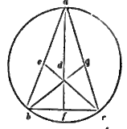

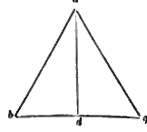
will remain \(25 + \sqrt{500}\) for cm squared; four times this, \(100 + \sqrt{8000}\), is the square of the inscribed circle’s diameter. Subtracting the pentagon side squared from the circumscribing diameter squared (\(200 + \sqrt{8000}\)) likewise leaves \(100 + \sqrt{8000}\) for the sought diameter squared. For the square of the diameter of any circle circumscribing an equilateral equiangular figure equals the square of its side plus the square of the inscribed circle’s diameter. To prove this, take circle abc, inscribe equilateral equiangular triangle abc, from center d draw da, db, dc, and bisect the sides at e, f, g; draw de, df, dg, each perpendicular to the sides of triangle abc and equal to each other. Lines da, db, dc are equal radii of circle abc; and since de, df, dg are equal, each is a radius of the circle inscribed in triangle abc. Since the squares on de and eb equal db squared, four times the squares on de and eb equals four times db squared. Now four times de squared is the square of twice de—the diameter of the circle inscribed in abc—and four times eb squared is ab squared, and four times the square of radius db is the square of the diameter of circle abc circumscribing triangle abc; therefore the square of the inscribed circle’s diameter together with the square of the circumscribing triangle’s side equals the square of the circumscribing circle’s diameter. The same is shown for any equilateral equiangular polygon circumscribing a circle and circumscribed by a circle; and this is what I wished to prove.
Again, if you wish to know the diameter of the circle inscribed in an equilateral equiangular decagon, since the circumscribing circle’s diameter is \(\sqrt{500} + 10\), squaring it and subtracting the decagon side squared (\(100\)) leaves \(500 + \sqrt{200000}\) for the sought diameter squared.
And if we say: an equilateral triangle with its perpendicular is \(10\), find the perpendicular. Make triangle abg, its perpendicular ad plus triangle abg equal to \(10\). Set ad as res; then db is the root of \(\frac{1}{3}\) census, and each of ab, bg, ag is the root of \(1\frac{1}{3}\) census. Multiplying ad by db (the root of \(\frac{1}{3}\) census) gives the root of \(\frac{1}{3}\) census census for triangle abg. Adding ad, res plus that root equals \(10\) drachmae. Restore the root of \(\frac{1}{3}\) census census to the root of one census census by multiplying by \(\sqrt{3}\); multiply all you have by \(\sqrt{3}\), giving the root of census census (which is census) plus the root of \(3\) census, equal to \(\sqrt{300}\). Halve the root of \(3\) census, giving \(\sqrt{\frac{3}{4}}\); square it to get \(\frac{3}{4}\); add this to \(\sqrt{300}\), giving \(\frac{3}{4} + \sqrt{300}\); take its root and subtract \(\sqrt{\frac{3}{4}}\), and the remainder is line ad, the perpendicular of triangle abg; and this is what we wished to expound.
In an equilateral equiangular square abgd, each side of which is \(10\), an equilateral pentagon acefh is inscribed. I wish to know the length of each side of the pentagon. Setting each of them as res, there will remain
f. 0221 · p. 214

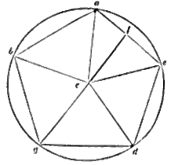
for each of hd and cb \(10\) minus res. Since ce and hf are equal, cb squared plus be squared equals hd squared plus df squared. Since cb equals hd, be equals fd; and eg equals gf, since bg equals gd. Since ef is res, its square is census; hence eg and gf are each the root of \(\frac{1}{2}\) census, leaving \(10\) minus that root for df. Squaring df gives \(100\) plus \(\frac{1}{2}\) census minus the root of \(200\) census; squaring dh (\(10\) minus res) gives \(100\) plus census minus \(20\) res. Adding all gives \(200\) plus \(1\frac{1}{2}\) census minus \(20\) res minus the root of \(200\) census, equal to census (hf squared). Add \(20\) res and the root of \(200\) census, and subtract census, leaving \(200\) plus \(\frac{1}{2}\) census equal to \(20\) res plus the root of \(200\) census. Reduce all these to one census by doubling all you have, giving census plus \(400\) equal to \(40\) res plus the root of \(800\) census. Halve the roots, giving \(20 + \sqrt{200}\), and square them, giving \(600 + \sqrt{320000}\); cast out \(400\), leaving \(200 + \sqrt{320000}\); subtract its root from \(20 + \sqrt{200}\), and the remainder will be res, namely the pentagon side.
The area of an equilateral equiangular pentagon is \(50\) drachmae; find each side. Set pentagon abgde with circumscribing center c, and draw ca, cb, cg, cd, ce, dividing abgde into five equal triangles, one being ace of area \(10\). You already know that when the pentagon side is \(10\), the circumscribing diameter squared is \(200 + \sqrt{8000}\), namely twice the side squared plus the root of \(\frac{4}{5}\) of its fourth power. Setting the side as res gives \(2\) census plus the root of \(\frac{4}{5}\) census census for the circumscribing diameter squared. Each of ca and ce is half this diameter, so ca squared is \(\frac{1}{2}\) census plus the root of \(\frac{1}{20}\) census census. Subtracting af squared (\(\frac{1}{4}\) census) leaves \(\frac{1}{4}\) census plus the root of \(\frac{1}{20}\) census census for perpendicular cf squared, since ac equals ce and cf bisects ae. Multiply cf squared by fa squared, giving \(\frac{1}{16}\) census census plus the root of \(\frac{1}{320}\) census census census, equal to triangle ace squared (\(100\)). Restore \(\frac{1}{16}\) census census by multiplying all by \(16\), giving census census plus the root of \(\frac{4}{5}\) census census census, equal to \(1600\). Reduce all you have to census census by multiplying by \(5 - \sqrt{20}\), giving census census equal to \(8000 - \sqrt{51200000}\); its root is each side of the pentagon.
And if we say: the area of an equilateral equiangular decagon is \(100\), find each side. Let bg be one side of the decagon, and a the center of its circumscribing circle; then each of ab and ag is a radius, and triangle abg is \(10\), being \(\frac{1}{10}\) of the whole
f. 0222 · p. 215
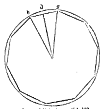


decagon. You know that when the decagon side is \(10\), the circumscribing diameter is \(10 + \sqrt{500}\), and its half \(5 + \sqrt{125}\). Setting bg as res, the diameter is res plus the root of \(5\) census; hence radius ab is \(\frac{1}{2}\) res plus the root of \(1\frac{1}{4}\) census. Draw perpendicular ad, meeting bg at midpoint d, so bd is \(\frac{1}{2}\) res. Squaring ab gives \(1\frac{1}{2}\) census plus the root of \(1\frac{1}{4}\) census census; subtracting bd squared (\(\frac{1}{4}\) census) leaves \(1\frac{1}{4}\) census plus the root of \(1\frac{1}{4}\) census census for ad squared. Multiply by bd squared (\(\frac{1}{4}\) census), giving \(\frac{5}{16}\) census census plus the root of \(\frac{5}{64}\) census census census census, equal to \(100\) (triangle abg squared). Multiplying all by \(3\frac{1}{5}\) gives census census plus the root of \(\frac{4}{5}\) census census census census, equal to \(320\). Reduce all these to census census by multiplying by \(5 - \sqrt{20}\), and census census equals \(1600 - \sqrt{2048000}\); taking the root of its root yields res, the sought decagon side. You can also find hexagon side ab otherwise: when the hexagon side is divided in extreme and mean ratio, its greater part is decagon side bg, as in Euclid. Cutting off eb equal to bd from ab, ae squared is five times eb squared, as in Euclid. Since eb is \(\frac{1}{2}\) res (bg being res), eb squared is \(\frac{1}{4}\) census, so ae squared is \(1\frac{1}{4}\) census; thus all ab is \(\frac{1}{2}\) res plus the root of \(1\frac{1}{4}\) census, as found above.
And if we say: in pentagon abgde, triangle agd has area \(10\); find pentagon side gd. Set gd as res; since ag is a pentagonal-angle chord and gd a decagonal-angle chord, cutting off gz equal to gd from ag makes ag to gz as gz to za. Bisecting gz at i, ai squared is five times gi squared; gi is \(\frac{1}{2}\) res (its square \(\frac{1}{4}\) census), so ai is the root of \(1\frac{1}{4}\) census, and all ag is the root of \(1\frac{1}{4}\) census plus \(\frac{1}{2}\) res. Then draw perpendicular at, meeting gd at its midpoint. Since triangle agd has sides ag and ad equal to those of the preceding triangle abg (one tenth of the decagon), and both triangles have equal bases (res), proceeding here as we did there, we likewise find census census equal to \(1600 - \sqrt{2048000}\) drachmae; hence the root of the root of this is side gd, which we set as res.
And if we say: triangle abe of pentagon abgde has area \(10\); find be. Set be (subtending the pentagon’s angle) as res, and draw perpendicular az bisecting be. When be is divided in extreme and mean ratio, its greater part equals the pentagon side, as in Euclid; in which it is also found that when any line is divided in extreme and mean ratio, and to the greater part is added the half of the
f. 0223 · p. 216

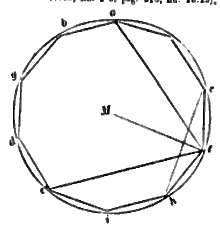
divided line, the square of the added line will be five times the square of half that divided line; and since when line be is divided in extreme and mean ratio, its greater part is line ab, which is the pentagon side; if line bz, which is half of line be, be joined to it, so that one line is made from both, the square of the line compounded of ab and bz will be five times the square of line ze; and ze is \(\frac{1}{2}\) res, and its square is \(\frac{1}{4}\) census of the line compounded of ab and bz. Whence if line bz is subtracted from its root, there will remain for line ab the root of \(1\frac{1}{4}\) census minus \(\frac{1}{2}\) res: which multiply by itself, giving \(1\frac{1}{2}\) census minus the root of \(1\frac{1}{4}\) census census: cast out from this the square of line bz, which is \(\frac{1}{4}\) census, and there will remain for the square of line az \(1\frac{1}{4}\) census minus the root of \(1\frac{1}{4}\) census census: which multiply by the square of line bz, which is \(\frac{1}{4}\) census, giving \(\frac{5}{16}\) census census minus the root of \(\frac{5}{64}\) census census census census, which equal the square of triangle abe, which is \(100\): multiply all these by \(3\frac{1}{5}\), giving census census minus the root of \(\frac{4}{5}\) census census census census, equal to \(320\) drachmae: reduce all these to census census; which is that you multiply all you have by \(5\), and by the root of \(20\), giving census census equal to \(1600\) drachmae, and the root of \(2048000\), whose root will be the square of line be.
And if we say to you: the measure of triangle cth of equilateral and equiangular decagon abgdeihtc is \(10\) in number, how great is line ch, which is the chord of \(\frac{2}{5}\) of the circle circumscribing that decagon? Let the center of its circle be m; and draw line tm, which divides line ch into two equal parts at point l; and I shall set ch as res; and when ch is res, then its square is census, and the square of the diameter of that circle is \(2\) census, and the root of \(\frac{4}{5}\) census census; and the square of half the diameter, namely line mt, is \(\frac{1}{2}\) census minus the root of \(\frac{1}{20}\) census census: and since the side of the pentagon ch is equal in power to the sides ta and te, that is, to the sides of the hexagon and the decagon: and we set ch as res, and its square is census; therefore the squares of lines mt and tc equal census: whence if from census be subtracted the square of line tm, which is \(\frac{1}{2}\) census, and the root of \(\frac{1}{20}\) census census, there will remain for the square of line tc \(\frac{1}{2}\) census minus the root of \(\frac{1}{20}\) census census: from which if be subtracted the square of line cl, which is \(\frac{1}{4}\) census, there will remain for the square of line tl \(\frac{1}{4}\) census minus the root of \(\frac{1}{20}\) census census: which if it be multiplied by the square of cl, namely by \(\frac{1}{4}\) census, there will come \(\frac{1}{16}\) census census and the root of \(\frac{1}{320}\) census census census census, which equal \(100\) drachmae. Restore \(\frac{1}{16}\) census census to one census census; which is that you multiply that by \(16\); and for this reason multiply all you have by \(16\), and there will be census census minus the root of \(\frac{4}{5}\) census census census census equal to \(1600\) drachmae. Reduce therefore all these to census census; which is that you multiply all you have by \(5\), and by the root of \(20\), and census census will come to be equal to \(8000\), and the root of \(51200000\), of which the root of the root is line ch; and this I wished to find.
Here end the geometrical questions: and here begin the questions whose solutions are not determinate, that is, which do not fall upon one term only, but upon many.
As is this, in which it is proposed to find some square number to which, if \(5\) be added, a square number proceeds therefrom; and this can be done in many ways. You will set for the root of the greater number res, and some drachmae, which when multiplied by themselves make a number less than \(5\); and let it be one drachma: and let res and the drachma be multiplied
f. 0224 · p. 217by themselves, and there will come census, and \(2\) res, and one drachma, which equal census, and \(5\) drachmae: cast out from both sides census and the drachma, and there will remain \(2\) res equal to \(4\) drachmae; therefore res is \(2\) drachmae; and its square is \(4\), the sought number: to which if \(5\) be added, there will come \(9\); which is a square number; and its root is \(3\). And if we set two drachmae with res, and multiply them by themselves, there will issue census, and \(4\) res, and \(4\) drachmae equal to census, and \(5\) drachmae: let us cast out from both sides census, and \(4\), and there will remain \(4\) res equal to one drachma; wherefore res is \(\frac{1}{4}\) of a drachma; which multiplied by itself makes \(\frac{1}{16}\) of one drachma for the sought number: to which if \(5\) be added, there will come \(5\frac{1}{16}\); which is a square number; and its root is \(2\frac{1}{4}\).
Otherwise, set for that square number the square ag; and let there be added to it the surface de, which let be \(5\); and let line ge lie in a straight line with line bg; and the superficial number will be the number ae, and it proceeds from ab into be: and the number ae is proposed to be square; wherefore the numbers ab and be are similar superficial numbers; that is, the ratio of the number eb to the number ab is as a square number to a square number. Whence we can find infinitely many pairs of numbers having between them a ratio as a square number to a square number, with which we shall be able to arrive at what is proposed. Wherefore let us set the ratio of the number eb to the number ba, that is, to the number gb, to be as \(4\). Wherefore the ratio of eg to gb will be as \(5\) to \(4\); and the ratio of surface de to square db is as straight line eg to straight line gb: therefore surface de to square db is as \(5\) to \(4\): whence if surface de is \(5\), then square db is \(4\); therefore the sought square number is \(4\): to which if \(5\) be added, there come \(9\), which is also square. And note that the ratio of surface de, which is \(5\), to square db ought to be as some square number whose fifth part is square, to any other square number. For example: let the ratio of eb to bg be as \(5\) to \(1\); therefore the ratio of de, which is \(5\), to db will be as \(80\) to \(1\); of which \(80\) it is the sixteenth part. Whence square db is \(\frac{1}{16}\) of \(1\), whose root is \(\frac{1}{4}\), which is had for side gb; and thus the whole surface ae will be \(5\frac{1}{16}\), whose root is \(2\frac{1}{4}\), as was found above.
Otherwise, because all square numbers proceed in order from the aggregation of the numbers themselves ascending from unity in order; if we collect the odd numbers which are below \(5\), namely \(1\) and \(3\), there will be generated therefrom \(4\); which is a square number: to which if \(5\) be added, there will come \(9\), which is a square number: and if we multiply some odd square number, say \(9\), by \(5\), there will come \(45\); and if we take the square which proceeds from the aggregation of all the odd numbers that are from one up to \(43\), that is, which are below \(45\); which square number is \(484\), and its root is \(22\); and upon that square add \(45\), doubtless we shall come to the square number \(529\): and because it is so, if we divide each square number by that square number by which we multiplied \(5\), doubtless two square numbers will proceed from that division, of which one exceeds the other by \(5\), as is sought; and one of those squares will be \(53\frac{7}{9}\), and the other \(58\frac{7}{9}\): and if you wish to have their roots, divide by the root of \(9\), and there will come \(7\frac{1}{3}\). Similarly, if we multiply \(5\) by some even square into two, or four, or more parts, so that each part be odd, and those odd parts lie in the order of odd numbers, we shall be able to arrive at the solution of the above-written question. For example: let us multiply \(5\)
f. 0225 · p. 218

by \(16\), giving \(80\); and let us divide \(80\) into two paired numbers which are consecutive in the order of odd numbers, and they will be \(39\) and \(41\): then aggregate all the odd numbers from unity which are below \(39\); which aggregation you will have if we multiply by itself half of the two extremes, namely of \(1\) and \(37\); from which multiplication will issue \(361\): with which if we add \(80\), there will come \(441\): if we divide these two squares by \(16\), we shall have \(22\frac{9}{16}\) and \(27\frac{9}{16}\), and their roots we shall have if by the root of \(16\), which is \(4\), we divide \(19\) and \(21\), which are the roots of \(361\) and of \(441\).
And if of \(80\) we make \(4\) odd parts, which are \(17\) and \(19\) and \(21\) and \(23\); which four parts are around the fourth part of \(80\), which is \(20\); and we aggregate the odd numbers which are below \(17\), there come \(64\), which is a square number, whose root is \(8\): upon which if we add \(80\), there will come \(144\): whence if we divide \(64\) and \(144\) by \(16\), and their roots by \(4\), we shall have what was desired as above.
And if we say: from a certain square number I took away \(10\), and there remained a square number; this question is similar to the preceding; because if upon the smaller square \(10\) be added, a square number proceeds therefrom: work therefore upon it according as we worked above, and you will find it.
The underwritten questions of triangles are to be placed in the preceding quire after the equilateral triangle whose measure together with its perpendicular is 10.
And if we say to you: in triangle abc, each side of which is \(10\), quadrilateral dbce is drawn, whose side de is equidistant from side bc; and the measure of that quadrilateral is \(10\); and you wish to know the quantity of line de, draw first in triangle abc the perpendicular af, and its square will be \(75\), namely \(\frac{3}{4}\) of the square of one of the sides: and the square of line bf, which is \(25\), is the third part of the square of perpendicular af. Whence if bf be multiplied by the root of \(75\), namely \(5\) by the root of \(75\), there will come the root of \(1875\) for the measure of triangle abc: and since line de is equidistant from line bc, triangle ade is similar to triangle abc: therefore triangle ade is equilateral. Whence if we set side de as res, which is one of the equal sides of triangle ade, its square will be census; wherefore the square of perpendicular ag will be \(\frac{3}{4}\) census, whose third part, namely \(\frac{1}{4}\) census, is the square of line dg: which if we multiply by the square of perpendicular ag, there will come \(\frac{3}{16}\) census census for the square of triangle ade; therefore triangle ade is the root of \(\frac{3}{16}\) census census; with which root let us add quadrilateral dbce, which is \(10\), and there will be had for the whole triangle abc \(10\), and the root of \(\frac{3}{16}\) census census. But triangle abc is the root of \(1875\); therefore \(10\), and the root of \(\frac{3}{16}\) census census equals the root of \(1875\). Whence if \(10\) be taken away from both sides, there will remain the root of \(\frac{3}{16}\) census census equal to the root of \(1875\) minus \(10\): reduce therefore all these to census, which is that you multiply all you have by the root of \(5\frac{1}{3}\), because when the root of \(\frac{3}{16}\) census census is multiplied by the root of \(5\frac{1}{3}\), there proceeds the root of \(\frac{16}{16}\) census census, that is, the root of census census; and the root of census census is census: and if you multiply the root of \(1875\) by the root of \(5\frac{1}{3}\), there will come the root of \(10000\), which is \(100\); and when the root of \(5\frac{1}{3}\) is multiplied by \(10\), there proceeds the root of \(533\frac{1}{3}\); therefore census, that is, the square of line de, is \(100\) minus the root of \(533\frac{1}{3}\), whose root is line de; and this I wished to find. And since triangle ade is of equal sides, the square of side ad will likewise be \(100\) minus the root of \(533\frac{1}{3}\). Whence if their root be taken away from \(10\), there will remain for line db \(10\) minus the root of the difference,
f. 0226 · p. 219
which is between the root of \(533\frac{1}{3}\) and \(100\) drachmas: and if from point d the perpendicular dh be drawn, and you wish to find its length, set it as res, and take half of the sides de and bc, and multiply it by res; and what proceeds will equal \(10\), that is, quadrilateral dbce. For example: the square of side de is \(100\) minus the root of \(533\frac{1}{3}\); wherefore the square of half of line de is \(25\) minus the root of \(33\frac{1}{3}\); therefore half of line de is the root taken of its square; and half of side bc is \(5\); and thus for half of sides de and bc there are had \(25\) minus the root of \(33\frac{1}{3}\), their root being taken, and \(5\) drachmas; which multiply by res, that is, by perpendicular dh. And from the multiplication of res by \(5\) you will have \(5\) res; and from the multiplication of res by \(25\) minus the root of \(33\frac{1}{3}\), their root being taken, you will have \(25\) census minus the root of \(33\frac{1}{3}\) census census, their root being taken; all of which equal \(10\): take away indeed from both sides \(5\) res, there will remain \(25\) census minus the root of \(33\frac{1}{3}\) census census, their root being taken, equal to \(10\) minus \(5\) res: multiply therefore all these by themselves, and there will come \(25\) census minus the root of \(33\frac{1}{3}\) census census equal to \(25\) census and \(100\) drachmas minus \(100\) res: therefore add to both sides \(100\) res and the root of \(33\frac{1}{3}\) census census, and take away from both \(25\) census, and there will remain \(100\) drachmas and the root of \(33\frac{1}{3}\) census census, which equal \(100\) res: multiply again \(100\) and the root of \(33\frac{1}{3}\) census census by themselves, and there will come \(33\frac{1}{3}\) census census, and \(10000\) drachmas, and \(200\) roots of \(33\frac{1}{3}\) census census, which equal \(10000\) census, namely the multiplication of \(100\) res by themselves: reduce all these to census census, which is that you divide all you have by \(33\frac{1}{3}\), and there will issue census, and \(300\) drachmas, and \(6\) roots of \(33\frac{1}{3}\) census census; which roots are one root of \(1200\) census census, which equal \(300\) census; take away from both sides the root of \(1200\) census census, and there will remain census census and \(300\) drachmas equal to \(300\) census diminished by the root of \(1200\) census census: and thus this question is reduced to one of the six rules of algebra; because it is as when it is said: census and number equal roots; which I wish to demonstrate by a figure. Set for census census the square ik, each side of which is census; and I shall set surface lm equal to \(300\) drachmas; and I shall add to line tm the line mo, so that the whole line to is \(300\); and I shall complete the surface no; therefore the whole surface io will be \(300\) census, since to is \(300\) and it is census; and surface im is as census census and \(300\) drachmas, and they equal \(300\) census minus the root of \(1200\) census census. Wherefore surface no is the root of \(1200\) census census. Whence it is necessary that line mo be the root of \(1200\) drachmas; because when census is multiplied by the root of \(1200\), there proceeds the root of \(1200\) census census. Whence if from the whole to, which is \(300\), mo be taken away, there will remain line tm \(300\) minus the root of \(1200\) drachmas: let us divide it therefore into two equal parts at point p, and tp will be \(150\) minus the root of \(300\) drachmas: line tm therefore is divided into two equal parts at point p, and into two unequal parts at point k. Whence if from the square of line tp be taken away the surface which is made from tk by km, that is, from lk by km, there will remain the square of line kp. Wherefore let us multiply tp, that is, \(150\) minus the root of \(300\), by itself, and there will come \(22800\) minus the root of \(6750000\); from which let us take away that which proceeds from lk by km, which is \(300\), and there will remain \(22500\) minus the root of \(6750000\) for the square of line pk; whose root if it be taken away from tp, there will remain for the quantity of census tk \(150\) minus the root of \(300\), and minus the root of the difference which is between the root of \(6750000\) and \(22500\) drachmas; and this which remains, which is census
f. 0227 · p. 220
tk, is approximately around \(1\frac{1}{7}\); whose root, which is around \(1\frac{1}{13}\), is the sought perpendicular dh; and this I wished to demonstrate. And if it be said: in triangle abg, each side of which is \(10\), an oblong rectangular quadrilateral cdef is drawn, and quadrilateral hikl, which is likewise oblong and rectangular; and \(10\) is the measure of each quadrilateral; and it is asked how great is the length of sides cf and hl, which are equidistant from each other and also from side bg; I shall first draw the perpendicular amno, and for each of the sides cf and hf I shall set the root of res; and each of the perpendiculars am and an will be the root of \(\frac{3}{4}\) res; which being subtracted from perpendicular ao, which is the root of \(75\), there will remain for each of lines mo and no the root of \(75\) minus the root of \(\frac{3}{4}\) res: and because the area of quadrangle cdef arises from the product of dc by cf, that is, of om by cf, let us multiply om by cf, that is, the root of \(75\) minus the root of \(\frac{3}{4}\) res, by the root of res; and what proceeds will equal \(10\): from the multiplication of the root of res by the root of \(75\) drachmas there will come the root of \(75\) res; and from the multiplication of the root of res by the root of \(\frac{3}{4}\) res subtracted there proceeds the root of \(\frac{3}{4}\) census subtracted, which equal \(10\). And if we multiply on by hl, that is, the root of \(75\) minus the root of \(\frac{3}{4}\) res, by the root of res, there will likewise come the root of \(75\) res minus the root of \(\frac{3}{4}\) census, which also equal \(10\): add therefore to both sides the root of \(\frac{3}{4}\) census, and there will remain the root of \(75\) res equal to \(10\) drachmas and the root of \(\frac{3}{4}\) census: multiply therefore \(10\) and the root of \(\frac{3}{4}\) census by themselves, and there will come \(100\), and \(\frac{3}{4}\) census, and the root of \(300\) census, which equal the root of \(75\) res multiplied by itself, that is, \(75\) res. Reduce all these to census, which is that you multiply all you have by \(1\frac{1}{3}\), and there will come census and \(133\frac{1}{3}\) drachmas; there will remain census and \(133\frac{1}{3}\) drachmas equal to \(100\) res, diminished thence by the root of \(533\frac{1}{3}\) census: take therefore half of the roots, which is \(50\) minus the root of \(133\frac{1}{3}\); and multiply them by themselves, and there will come \(2633\) minus \(100\) roots of \(133\frac{1}{3}\); from which subtract the \(133\frac{1}{3}\) drachmas which are with census, and there will remain \(2500\) minus the root of \(1333333\frac{1}{3}\); whose root subtract from half of the roots, namely from \(50\) minus the root of \(3133\frac{1}{3}\). The remainder will be the lesser res, namely the square of line cf. And if upon \(50\) minus the root of \(133\frac{1}{3}\) you add the root of the remainder which is between the root of \(1333333\frac{1}{3}\) and \(2500\) drachmas, what proceeds will be the square of the greater res, namely of line hl; and the square of line cf is approximately \(1\frac{7}{9}\); and its root is \(1\frac{1}{3}\); and the square of line hl is approximately \(75\frac{1}{8}\); and its root is \(8\frac{2}{3}\): and if we wish to have knowledge of sides cd and hl, we shall likewise set each of them as the root of res: and because triangles hbi and cbd are similar to triangle abo, as the square of line bi is to the square of line ih, so will be the square of line bo to the square of line oa. But the square of line bo is \(\frac{1}{3}\) of the square of line oa; wherefore the square of line bi is \(\frac{1}{3}\) res, since line ih is the root of res: for the same reason therefore the square of line kg will be \(\frac{1}{3}\) res; therefore each of straight lines bi and kg is the root of \(\frac{1}{3}\) res; which being subtracted from the whole bg, which is \(10\), there will remain line ik \(10\) minus two roots of \(\frac{1}{3}\) of a drachma, which are the root of \(1\frac{1}{3}\): let us multiply therefore line hi by line ik, namely the root of res by \(10\) minus the root of \(1\frac{1}{3}\), there will come the root of \(100\) res minus the root of \(1\frac{1}{3}\) census, which equal \(10\). Likewise because as bo is to oa, so is bd to dc, and el to ef. Wherefore each of straight lines bd and eg is the root of \(\frac{1}{3}\); which being subtracted from bg, there will remain de \(10\) minus the root of \(1\frac{1}{3}\): whence when we multiply cd, which is the root of res, by de, there will come
f. 0228 · p. 221
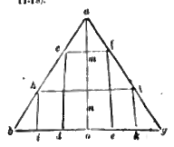

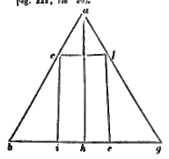
likewise the root of \(100\) res minus the root of \(1\frac{1}{3}\) census, which was \(10\) likewise: whence if to both sides be added the root of \(1\frac{1}{3}\) census, there will be \(10\) and the root of \(1\frac{1}{3}\) census equal to the root of \(100\) res: multiply therefore \(10\) and the root of \(1\frac{1}{3}\) census by themselves, and there will be \(100\), and \(1\frac{1}{3}\) census, and the root of \(533\frac{1}{3}\) census, which equal \(100\) res, namely the multiplication of the root of \(100\) res by itself. Reduce now all you have to census, which is that you multiply all you have by \(\frac{3}{4}\) of a drachma, and there will come census, and \(75\), and the root of \(300\) census equal to \(75\) res: cast away therefore from both sides the root of \(300\) census, and there will remain census and \(75\) drachmas, which equal \(75\) res, diminished by the root of \(300\) census: multiply half of the roots by itself, which are \(37\frac{1}{2}\) minus the root of \(75\), and there will come \(1481\frac{1}{4}\), diminished thence by \(75\) roots of \(75\); from which take away \(75\), which are with census, there will remain \(1406\frac{1}{4}\) minus the root of \(481875\); whose root cast away from half of the roots, namely from \(37\frac{1}{2}\) minus the root of \(75\), and the remainder will be the lesser res, namely the square of line hi; which square is around \(1\frac{1}{3}\), and its root is around \(1\frac{2}{13}\); and this is the length of line hi: which if we multiply by hl, which is around \(8\frac{2}{3}\), doubtless there will come \(10\) for quadrilateral hikl; and this we wished. Likewise if upon \(37\frac{1}{2}\) minus the root of \(75\) we add the root of the difference which is between \(421875\) and \(1406\frac{1}{4}\) drachmas, we shall have the square of the greater res, namely of line cd; which square is around \(56\frac{1}{4}\), and its root, which is line cd, is around \(7\frac{1}{2}\); which being multiplied by line cf, which is around \(1\frac{1}{3}\), there will come \(10\) for quadrilateral cdef, as is fitting. Otherwise, because we found above the square of side cf, that res is \(50\) minus the root of \(133\frac{1}{3}\), and the root of the difference which is between the root of \(1333333\frac{1}{3}\) and \(2500\) drachmas; and the square from am was \(\frac{3}{4}\) of res; if we take \(\frac{3}{4}\) of the aforesaid, which are res, we shall have the square of line am. For \(\frac{3}{4}\) of \(50\) are \(37\frac{1}{2}\), and \(\frac{3}{4}\) of the subtracted root of \(133\frac{1}{3}\) will be had, if we multiply the square of \(\frac{3}{4}\), which is \(\frac{9}{16}\), by \(133\frac{1}{3}\); and from that which proceeds we take the root; from which multiplication there proceeds the root of \(75\) subtracted. Likewise we take \(\frac{9}{16}\) of \(2500\), and \(\frac{81}{256}\) of \(1333333\frac{1}{3}\), and there will come \(1406\frac{1}{4}\) minus the root of \(421875\), the root being taken therefrom; and thus for the square of line am there are had \(37\frac{1}{2}\), diminished by the root of \(75\), diminished by the root of the difference which is between the root of \(421875\) and \(1406\frac{1}{4}\); whose root subtract from the whole ao, which is the root of \(75\), and there will remain for mo, that is, for cd, \(7\frac{1}{2}\) and \(25\) seconds; and cf is around \(1\frac{1}{3}\) minus \(4\frac{2}{3}\) seconds: And if upon \(37\frac{1}{2}\) minus the root of \(75\) be added the root of the difference which is between the root of \(421875\) and \(1406\frac{1}{4}\), what proceeds will be the square of perpendicular an; whose root if it be taken away from ao, there will remain for line no, that is, for line hi, around \(1\frac{1}{6}\). Again, in triangle abg, each side of which is \(10\), let quadrilateral cbef be drawn having angles cfe right; and let the measure of this quadrilateral be \(10\); and I wish to know the quantity of side fe. I shall first draw in triangle abg the perpendiculars ah and ci, and triangles bic and gef will be similar to triangle ahb. Wherefore as the square of side bh is to the square of side ha, so will be the square of side bi to the square of side ic, and the square of side ge to the square of side ef. For the square of side bh is the third part of the square of side ha; therefore the square of side bi will be \(\frac{1}{3}\) of the square of ic; and the square of side ge of the square of side ef will likewise be \(\frac{1}{3}\): and because the measure of quadrangle cbef is gathered from the multiplication of ef by half of sides cf and be, I shall set side ef as the root of res; wherefore eg will be one root of \(\frac{1}{3}\) res; which being subtracted from the whole line bg, there will remain
f. 0229 · p. 222
for line be \(10\) minus the root of \(\frac{1}{3}\) res: and because angles cfe and feb are right, line cf will be equidistant from line be: for ci and fe are equidistant from each other; wherefore cf and ie are equal to each other, and straight line ei is also equal to straight line fe: whence if cf, namely ie, be taken away from the whole bg, which is \(10\), there will remain for line cf \(10\) minus two roots of \(\frac{1}{3}\) res; which being added with the measure of side be, which is \(10\) minus the root of \(\frac{1}{3}\) res, there will come out \(20\), diminished by three roots of \(\frac{1}{3}\) res, for the quantity of sides cf and be; half of which, which is \(10\) minus the root of \(\frac{3}{4}\) res, if we multiply by line fe, which is the root of res, there will come the root of \(100\) res minus the root of \(\frac{3}{4}\) census, which equal \(10\): add to both sides the root of \(\frac{3}{4}\) census, and there will be \(10\) drachmas and the root of \(\frac{3}{4}\) census, which equal the root of \(100\) res: let us multiply therefore \(10\) and the root of \(\frac{3}{4}\) census by themselves, and there will come \(100\), and \(\frac{3}{4}\) census, and the root of \(300\) census, which equal \(100\) res, namely the multiplication of the root of \(100\) res by itself: reduce all these to census, which is that you multiply all you have by \(1\frac{1}{3}\), and there will be census, and \(133\frac{1}{3}\) drachmas, and the root of \(533\frac{1}{3}\) census equal to \(133\frac{1}{3}\) res: cast away from both sides the root of \(533\frac{1}{3}\) census, and there will remain census and \(133\frac{1}{3}\) drachmas equal to \(133\frac{1}{3}\) res, diminished thence by the root of \(533\frac{1}{3}\) census: halve therefore the roots, and they will be \(66\frac{2}{3}\) minus the root of \(133\frac{1}{3}\) drachmas; multiply these by themselves, and there will come \(4444\frac{4}{9}\) and the root of \(2370370\frac{10}{27}\); whose root cast away from half of the roots, namely from \(66\frac{2}{3}\) minus the root of \(133\frac{1}{3}\), and the remainder will be res, namely the square of side ef; which are done thus: cast away the root of \(2270370\frac{10}{27}\), which is around \(1539\), and \(26\) minutes, and \(2\) seconds, and \(35\) thirds, from \(4444\frac{4}{9}\), and there will remain \(2904\), and \(50\) minutes, and \(37\) seconds, and \(25\) thirds; whose root, which is \(53\), and \(53\) minutes, and \(47\) seconds, and \(46\) thirds, add with the root of \(133\frac{1}{3}\), which is \(11\), and \(32\) minutes, and \(49\) seconds, and \(23\) thirds, and they will be \(65\), and \(26\) minutes, and \(36\) seconds, and \(50\) thirds; which take away from \(66\frac{2}{3}\), and there will remain \(1\), and \(13\) minutes, and \(23\) seconds, and thirds for the quantity of res; whose root, which is around \(1\), and \(6\) minutes, and \(21\) seconds, and \(20\) thirds, will be line ef; and this I wished to demonstrate. And if you wish to have knowledge of sides cf and be, you will be able to find them in two ways: first, by approximation, take \(\frac{1}{3}\) of res, namely of \(1\), and \(13\) minutes, and \(23\) seconds, and a third, and there will come \(22\) minutes, and \(27\) seconds, and \(6\) thirds, and \(40\) fourths for the square of line eg; whose root, which is \(38\) minutes, and \(18\) seconds, and \(42\) thirds, take away from the whole bg, and be will remain known: and if you take away double \(38\) minutes, \(18\) seconds, and \(42\) thirds from \(10\), the remainder will be side cf. And if you wish to have knowledge of side cb, multiply ci and ib by themselves, and there will come \(1\frac{1}{3}\) res for the square of line cb. Wherefore multiply \(1\), and \(13\) minutes, and \(23\) seconds, and \(1\) third by \(1\frac{1}{3}\); and take the root of what proceeds, and you will have side cb: for half of sides cf and de is \(9\), \(2\) minutes, \(31\) seconds, and \(57\) thirds; which multiplied by ef, namely by \(1\), \(6\) minutes, \(21\) seconds, and \(20\) thirds, there will come \(10\) and a little more, namely \(2\) thirds, \(43\) fourths, and \(36\) fifths. Otherwise, because the square of line eg is \(\frac{1}{3}\) of the square of line ef, and the square of line ef is \(66\frac{2}{3}\) minus the root of \(133\frac{1}{3}\), and minus the root of the difference which is between the root of \(2370370\frac{10}{27}\) and \(4444\frac{4}{9}\), take \(\frac{1}{3}\) of \(66\frac{2}{3}\) and of the roots written above, and you will have for the square of line eg \(22\frac{2}{9}\) minus the root of \(14\frac{22}{27}\), and minus the root of the difference which is between \(\frac{1}{9}\) of the root of \(2370370\frac{10}{27}\) and \(\frac{1}{9}\) of \(4444\frac{4}{9}\), that is, between the root of \(9263\) (with fraction \(13472\)) and \(493\frac{67}{81}\): and when you have taken the root from these, you will have \(3990\) for line eg, around \(38\) minutes, and \(27\) seconds, and \(42\) thirds:
f. 0230 · p. 223

and because as ab is to bh, so is cb to bi, cb will be double \(38\) minutes, \(27\) seconds, and \(42\) thirds; which double is \(1\), and \(16\) minutes, and \(55\) seconds, and \(24\) thirds; which being subtracted from the whole ab, there will remain for the quantity of line ac, that is, for cf, \(8\), \(43\) minutes, \(4\) seconds, and \(36\) thirds: for triangle acf is equilateral, since it is similar to triangle abg: and if from bc, namely from \(10\), be taken away \(38\) minutes and \(27\) seconds, there will remain for line be \(9\), \(21\) minutes, \(32\) seconds, and \(18\) thirds. Again, in equilateral triangle abg, each side of which is \(10\), and whose perpendicular is ad, quadrilateral adcf is drawn, whose measure is \(10\); and let it be asked how great is the length of line cf; first indeed it is manifest that the measure of triangle adg is the root of \(478\frac{3}{4}\), which proceeds from the product of ad by half of dg; from which root if \(10\) be taken away, namely quadrilateral adcf, the remainder will be triangle gcf, which is similar to triangle gda. Wherefore the square of line cf is triple the square of line gc: set therefore res for the square of side cf. Wherefore the square of side cg will be \(\frac{1}{3}\) res; and I shall multiply cf by half of cg, that is, the root of res by the root of \(\frac{1}{12}\) res, and there will come the root of \(\frac{1}{12}\) census, which root being added with quadrilateral adcf, there will come \(10\) and the root of \(\frac{1}{12}\) census, which equal the root of \(478\frac{3}{4}\): multiply therefore \(10\) and the root of \(\frac{1}{12}\) census by themselves, and there will come \(100\), and \(\frac{1}{12}\) census, and the root of \(33\frac{1}{3}\) census, which equal \(476\frac{3}{4}\) drachmas: cast away therefore from both sides \(100\), and multiply all that remains by \(12\), so that census be restored, and there will issue census and the root of \(4800\) census, which equal \(4425\) drachmas: halve therefore the roots which are with census, and multiply the half by itself, and they will be \(1200\); with which add \(4425\), and there will come \(5625\); from whose root, which is \(75\), cast away the root of \(1200\), and there will remain for the quantity of res, namely of line qf, \(75\) minus the root of \(1200\); whose third part, which is \(25\) minus the root of \(133\frac{1}{3}\), is the square of line cg; whose root if it be subtracted from dg, which is \(5\), there will remain for line dc around \(1\frac{1}{3}\); and cf by approximation is \(6\frac{1}{3}\); and line ad is \(8\frac{2}{3}\); and half of sides cf and da is \(7\frac{1}{2}\); which being multiplied by de, namely by \(1\frac{1}{3}\), there will come \(10\) for the measure of quadrilateral adcf; and this I wished to demonstrate. Likewise, in equilateral triangle abc, each side of which is \(10\), an equilateral and equiangular square defg is drawn; and I wish to have knowledge of the sides of the square itself. Because the sides of the square itself are equal to one another, side dg will be equidistant from side bc; wherefore triangle adg is equilateral: these things being understood, I shall set side dg, that is, side ad, as the root of res; and I shall take away ad from ab, and there will remain for line db \(10\) minus the root of res; which I shall multiply by itself, and there will come \(100\), and res minus the root of \(400\) res for the square of line db: then I shall multiply de by itself, and there will come res; and I shall multiply eb by itself, and there will come \(\frac{1}{4}\) res; and thus res and \(\frac{1}{4}\) equal \(100\) drachmas, and res minus the root of \(400\) res: take away from both sides res, and \(\frac{1}{4}\) res, and add to both sides the root of \(400\) res, and there will be \(100\) minus \(\frac{1}{4}\) res equal to the root of \(400\) res: multiply each side by itself, and there will be \(10000\), and \(\frac{1}{9}\) census minus \(66\frac{2}{3}\) res equal to \(400\) res: add to both sides \(66\frac{2}{3}\) res, and multiply by \(9\) all that you have, and there will come census and \(90000\) drachmas equal to \(4200\) res: halve therefore the res, and they will be \(2100\); which multiply by itself, and they will be \(4410000\); from which cast away \(90000\), and there will remain \(4320000\); whose root, which is \(2078\), and \(27\) minutes, and \(48\) seconds a little less, subtract from \(2100\), and there will remain a little more than \(21\), and \(32\) minutes, and \(30\) seconds for the quantity of res, that is, for the square
f. 0231 · p. 224
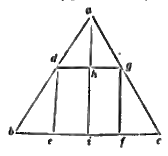
of de; whose root, which is around \(4\), and \(38\) minutes, and seconds and thirds, is each of the sides of the square itself. And according to this also, in equilateral triangle abc, in which is constituted an equilateral pentagon adefg, each side of which, through the things we have said, will be known. Otherwise I shall draw perpendicular ai, and I shall multiply ai by bi, that is, the root of \(75\) by \(5\), and there will come the root of \(1875\) drachmas for the area of the whole triangle abc. Then I shall multiply de, namely the root of res, by be, that is, by the root of \(\frac{1}{3}\) res, and there will issue the root of \(\frac{1}{3}\) census for the area of triangles deb and gfc: and I shall multiply de also by itself, and there will come res for the area of square defg. And I shall multiply ad again by itself, and there will come res; from which I shall take away the square of line dh, which is \(\frac{1}{4}\) res, and there will remain \(\frac{3}{4}\) res for the square of perpendicular ah: and I shall multiply ah by dh, and there will come the root of \(\frac{3}{16}\) census for the area of triangle adg: then I shall add the root of \(\frac{3}{16}\) census with the root of \(\frac{1}{3}\) census; which addition is made thus: let the root of \(\frac{1}{3}\) census be multiplied by itself, and the root of \(\frac{3}{16}\) census by itself, and there will come \(\frac{1}{3}\) census and \(\frac{3}{16}\), that is, \(\frac{25}{48}\) census; and multiply the root of \(\frac{1}{3}\) census by the root of \(\frac{3}{16}\) census, and there proceeds the root of \(\frac{1}{16}\) census census, that is, \(\frac{1}{4}\) census, whose double is \(\frac{1}{2}\) census; which is added with \(\frac{25}{48}\) census, and there comes out \(1\frac{1}{48}\) census, whose root is the area of triangles deb, and feg, and adg. Which area I shall find otherwise. Because triangles deb and ahd are similar to one another, they will have sides proportional about the equal angles. Wherefore as bd is to de, that is, to da, so will da be to ah: indeed straight lines bd, and da, and ah are continually proportional. Wherefore as bd, the first, is to ah, the third, so is triangle dbe to triangle adh. But as bd is to ah, so is the square of line bd to the square of line da: for the square of line bd is \(1\frac{1}{3}\) res; and the square of line da is res; therefore as \(1\frac{1}{3}\) is to \(1\), that is, as \(4\) is to \(3\), so is triangle dbe to triangle adh. But as triangle dbe is to triangle adh, so is the double of triangle dbe, that is, triangles dbe and gef, to the double of triangle adh, that is, to triangle adg: therefore as \(4\) is to \(3\), so are triangles dbe and def to triangle adg. Wherefore as \(4\) is to the sum of \(4\) and \(3\), that is, to \(7\), so are triangles dbe and gef, which are the root of \(\frac{1}{3}\) census, to these three triangles. Wherefore if we multiply the root of \(\frac{1}{3}\) census by \(7\), and divide the sum by \(4\), there will come the root of \(1\frac{1}{48}\) census for the area of triangles dbe, gcf, and adg: with which if we add square df, which is res, there will be had the root of \(1\frac{1}{48}\) census and res for the area of triangle abc. Which area we found above to be the root of \(1875\): therefore res and the root of \(1\frac{1}{48}\) census equal the root of \(1875\): let us take away res from both sides, and the root of \(1875\) minus res will be equal to the root of \(1\frac{1}{48}\) census. Multiply therefore each side by itself, and there will be census, and \(1875\) drachmas, minus the root of \(7500\) census, equal to \(1\frac{1}{48}\) census: add therefore to both sides the root of \(7500\) census, and take away from both sides census, and there will remain \(\frac{1}{48}\) census and the root of \(7500\) census equal to \(1875\) drachmas. Reduce therefore all you have to census, which is that you multiply them by \(48\), and there will come census and the root of \(17280000\) equal to \(90000\) drachmas: halve therefore the root which is with census, and there will come the root of \(4320000\); which multiply by itself, and there will come \(4320000\); upon which add \(90000\), and they will be \(4410000\); from whose root, which is \(2100\), cast away the root of \(4320000\), which is \(2078\), and \(27\) minutes, and \(40\) seconds, and thirds, by approximation, and there will remain \(21\), and \(32\) minutes, and \(20\) seconds, and thirds for the quantity of res; whose root, as we said above, is each of the sides of pentagon adefg, or of square defg; and this I wished to demonstrate.
f. 0234 · p. 227
Flos (1225) — The Imperial Cubic & Book X Irrationals¶
Latin Locus: Flos super Solutionibus Quarundam Questionum (pp. 227–234) · Commentary: Notes on the Flos Cubic & Congruum
Here begins the Flower of Leonardo Bigollo of Pisa upon the solutions of certain questions pertaining to number and to geometry, or to both.
Having understood, blessed father and venerable lord R., by the grace of God most worthy Cardinal Deacon of Santa Maria in Cosmedin, that you deigned through letters of Your Holiness not merely to command—which better befitted you—but simply to request a copy of my works; nevertheless, reverently receiving that petition as a command, I strove most devoutly not only to obey your wish in this part, but also, compiling from a wide multitude the solutions of certain questions posed to me over time by certain philosophers of my most serene lord Caesar and by others, and of many solved more subtly than in the greater book on number which I composed, and of many which I myself discovered, I wished this little book composed to the praise and glory of your name to be entitled the Flower; because I dictated these things to you radiant with the flowery elegance of clerics, and also because therein are set certain flowery though knotty questions, so plausibly unraveled by vigilant investigation both geometrically and arithmetically that they not only flower in themselves, nay, even that through them, as little shoots from roots, countless questions emerge, to which if you will sometimes deign to give leisure, you may, if it please you, amidst your cares and occupations, keeping free from that idleness which is the stepmother of virtues, under the exercise of the intellect, to seize consolations neither barren, but dutiful. And if I learn that this is accepted by the kindness of your clemency, whatever pleasant subtlety or usefulness I may further discover, I shall dutifully add to this same work, so that I may merit to obtain your grace, most affectionately submitting both it and myself to the correction of your lordship.
Here ends the prologue; here begins the treatise of the same.
When before Your Majesty, most glorious Prince Frederick, Master John of Palermo, your philosopher, had conferred with me at Pisa about many things concerning numbers, among them he proposed two questions which pertain no less to geometry than to number. The first of these was to find some square number to which, when five is added or subtracted, a square number issues forth; which square number, as I reported to the same Master John, I found to be eleven and two thirds and one hundred-forty-fourth of one. The root of this number is three and one fourth and one sixth of one. If five be added to this square number, there will come sixteen and two thirds and one hundred-forty-fourth; which number is a square. Its root is four and one twelfth. Likewise if five be taken away from the same square number, there will remain six and two thirds and one hundred-forty-fourth; which number is also a square. Its root is two and a third and a fourth of one. And when I had reflected for a long time whence the solution of the aforesaid question arose, I found it to have its origin from many properties that befall square numbers and among square numbers: wherefore, taking matter hence, I began to compose a little book to the glory of Your Majesty’s highness, which I entitled the Book of Squares, wherein will be contained the reasons, proofs, and geometrical solutions of the aforesaid question and many others, which Your Immensity may have if it please Your Highness.
f. 0235 · p. 228
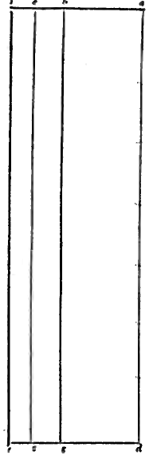
The second question proposed by the aforesaid Master John was to find a certain cube number which, together with its two squares and ten roots gathered into one, would equal twenty: meditating upon this, I judged that the solution of this question issues from those things contained in the tenth book of Euclid; and on this account I studied that tenth book of Euclid more carefully, so much so that I committed its theorems to memory and grasped their meaning. And because it is more difficult than the preceding and certain following books of Euclid, I therefore began to gloss that tenth book itself, reducing its meaning to number, which is demonstrated in it through lines and surfaces; which tenth book treats of the varieties of fifteen straight lines, of which fifteen lines two are called rational, or reckoned.
The remaining thirteen are called irrational, or unreckoned. Of these two rational ones, one is called rational in length and in power; the other, however, in power alone. By the first of these two is understood a number that can be numbered, as one, two, three, and the rest, or parts of unity, as a half, a third, a fourth, and other fractions; all of which are roots of square numbers. By the second are understood the roots of rational non-square numbers. Whence the power of those roots is numbered, while the roots themselves cannot be numbered; and therefore they are called surd numbers. And of the thirteen aforesaid lines the first is simple, which is called medial, by which is understood the root of the root of a non-square number. And of the remaining ones, six are roots of binomial numbers, that is, of two names. The rest are roots of apotomes. Those of two names are numbers composed of a number and a root, or of two roots; which composition is made in six ways. An apotome number is called the remainder which is between a number and a root, or between two roots; which is also made in six other ways, as Euclid says.
And when I reflected studiously upon these fifteen numbers and upon their varieties, I found that none of them could agree with one of the ten aforesaid roots which, with two squares and a cube, make twenty, as is demonstrated geometrically in what follows.
Let a line ab lie adjacent for one of the said ten roots, to which let a rectangular surface bd be applied having straight breadth dg, which is \(10\). And to straight line bg let a rectangular surface eg be applied equal to the cube which is made from the number ab.
Again, to straight line ez let a right-angled parallelogram iz be applied equal to two squares made from the number ab; therefore the whole surface at will be rectangular and equal to \(20\), for angles abg and gbe are right. Hence line be is in a straight line with ba. Similarly it will be proved that line ei is in a straight line with eb. Wherefore the whole line ai is straight and continuous. Similarly line dt is straight; therefore surface at is a parallelogram, and right-angled, since all its angles are right. And each of lines ad, bg, ez, it is \(10\). Now since line ab is one of the above-written ten roots, surface ag will equal the aforesaid ten roots, since line bg is \(10\). And indeed surface bz equals the cube made from root ab; and surface et equals the two squares, each made from the same root ab. Therefore the whole surface at is composed of one cube and two squares and ten roots, all of which joined together are proposed to be \(20\). Wherefore surface at is \(20\). And since
f. 0236 · p. 229
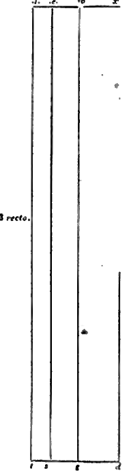
each of sides ad and it is \(10\), each of sides ai and dt will be \(2\), since surface at is \(20\). I say first therefore that root ab cannot be of the rational numbers, nor of the roots of rational numbers, nor of the roots of roots of rational numbers, nor of the six conjoined numbers, nor of the six remainder numbers written above, nor of the roots of conjoined or apotome numbers. And if it be possible, let root ab first be of the numbers that are rational in length and in power. And since the whole ai is \(2\), and ab is less than ai, root ab is less than two. And since ab was posited to be of rational numbers, ab is either whole or fractional: let it first be whole, if possible. Since no whole number is less than two save unity, root ab will be one. Wherefore surface bd will be \(10\); and the cube made from unity ab, namely surface dz, will be \(1\). Likewise the two squares from unity ab, namely surface iz, will be \(2\): wherefore the whole surface at will be \(13\) only; yet surface at is \(20\). Therefore root ab is not a whole number.
Similarly it will be shown that the number ab is not fractional. For if the number ab is fractional, when it is cubed, there will issue from that cubing fractions, and fractions of a fraction, and fractions of a fraction of a fraction: and when the number ab, if fractional, is multiplied by itself, from double its multiplication there issues a fraction of a fraction or fractions of a fraction. And when the same broken number, namely ab, is multiplied by bg, namely by \(10\), sometimes only a fraction or fractions will issue, and sometimes a whole number will issue from that multiplication. Thus when ab is multiplied by bg, the number bd comes forth. When ab is cubed, the number bz comes forth. When the product of ab by itself is doubled, et comes forth. Therefore if ab is fractional, sometimes in bd there occurs some fraction or fractions only; in bz there occur fractions, fractions of a fraction, and fractions of a fraction of a fraction; and in et also there occur fractions and fractions of a fraction only. Whence if the fractions which are in numbers bd, bz, and zi are joined together, never from their conjunction will a whole number be able to be generated. Wherefore if ab is fractional, di, which is \(20\), will be fractional; which is absurd. And if bd is without a fraction, the remainder bt will likewise be without a fraction, since the whole number ai is \(20\); which will not happen, since in et there are fractions and fractions of a fraction, and in bz there are fractions and fractions of a fraction and fractions of a fraction of a fraction. Therefore ab is neither fractional nor whole.
I shall show again that it is impossible for ab to be the root of any rational number. Let ab be multiplied by itself, and let bk come forth; and from bk into ba comes the rectangular surface ak, which surface equals the cube made from ab. Wherefore surface ka equals surface bz. And of equal parallelograms having one angle equal to one, the sides about the equal angles are reciprocally proportional, as is found in the sixth book of Euclid. Therefore as gb is to bk, so is ab to be. And when four quantities are proportional, as the first to the second so the third to the fourth, if the first is commensurable with the second, the third is also commensurable with the fourth, as is found in the tenth book of Euclid. For straight line ab is the root of a number. Wherefore the square made from it, namely the number bk, is rational; and gb is \(10\), which is rational; therefore the first number
f. 0237 · p. 230
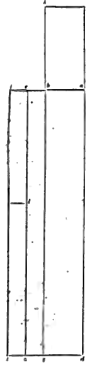
gb is commensurable with the second, bk. Wherefore ab is also commensurable with be. For ab is the root of a rational number; wherefore be is also the root of a rational number. Since ab is commensurable with be, ab will be commensurable with the whole ae. Wherefore ae is the root of a rational number, and is commensurable in power only with ai, namely \(2\). Hence if from two, ai, be taken away root ae—which are rational in power only—there will remain the apotome ei, which is proved by Euclid in the tenth book to be irrational. But because from multiplying ab by itself there comes a rational number, namely half of surface et, the whole surface et will therefore be rational, one side of which, ez, is rational, being \(10\). Wherefore side ei is rational, which above was shown to be irrational. Whence it is impossible for root ab to be the root of a rational number, as I said before.
Otherwise, since line ae is the root of a rational number, as was shown, and line ez is a rational number, surface de will be the root of a number, and surface et is a rational number. Wherefore the whole surface di consists of an irrational and a rational number; which is absurd, since surface di is \(20\). Further I say that root ab is not the root of the root of any number; but if it be possible, let ab be the root of the root of some rational number; and likewise from multiplying ab by itself let bk come forth; and from ab into bk comes surface ka, which is equal to surface bz, that is, to the cube made from root ab. Wherefore as gb is to bk, so is ab to be. Since ab is the root of the root of a rational number, bk will be the root of the root of a rational number. Hence numbers gb and bk are commensurable in power only; and ab and be are likewise commensurable in power only. For line ab is medial, that is, the root of the root of a rational number. Therefore line be will also be medial, and incommensurable with line ba in length. Wherefore the whole ae is made from two medials commensurable in power only; therefore ae is one of the two bimedial lines, namely the root of one of the composite numbers above said. Likewise from multiplying ab by itself comes half of surface et, namely surface li; which surface is applied to the rational line le, which is \(5\). And because that which is from a medial upon a rational line makes a breadth rational and incommensurable in length with that to which it lies adjacent, straight line ei is therefore rational, and incommensurable in length with straight line le; therefore line ei is the root of a rational number, and is incommensurable with line ai in length; for they are commensurable in power only. Wherefore the remainder ae is an apotome, that is, a cut-off. For no cut-off is a binomial, as is found in the same tenth book. Wherefore since line ae was shown above to be bimedial, which has now been found to be a cut-off, and because no apotome is bimedial, it follows that line ab cannot be the root of the root of a rational number; which was required to be shown. I shall show again that one of the aforesaid roots, namely line ab, cannot be any of the composite or separated lines, nor of their roots. But before I come to the proof of this matter, I wish to set down the properties of those lines themselves. By the first of the six composite lines is understood that composed of a number and a root, the power of which number exceeds the power of the root by the quantity of some square number: as if four be composed with the root of seven, the power of four is \(16\), and the power of the root of \(7\) is \(7\); and thus the power of four adds \(9\) above the power of the root of \(7\), which nine is a square, and its root
f. 0238 · p. 231is \(4\). By the second indeed is understood the composition of a root and a number, the square of which root exceeds the square of the number itself by the quantity of some number having to the square of that root the ratio that a square number has to a square number: as if the greater term be the root of \(112\), and the lesser be \(7\), then the remainder which is from the square of seven, namely from \(49\), to \(112\), that is, \(63\), has a ratio to \(112\) as the square number \(9\) to the square number \(16\). By the third is also understood the composition of two roots of different numbers not having a ratio to each other as a square number to a square number; and the greater term exceeds the lesser in power by a line commensurable with itself in length, that is, that the difference which is between the two squares of those roots has a ratio to the square of the greater root as a square number to a square number: as if the first term be the root of \(18\) and the second of \(10\), the difference which is from \(18\) down to \(10\), namely \(8\), has to \(18\) the ratio that the square number \(4\) has to the square number \(9\).
By the fourth indeed is understood that composed of a number and a root, which number exceeds the root itself in power by a line incommensurable with itself in length, that is, that the difference which is between the square of the number itself and the square of the root is not a square number, as happens with four and the root of six. By the fifth is understood that composed of the root of some non-square number and some number, wherein the square of the root exceeds the square of that number by a quantity not having to the square of the root the ratio of a square number to a square number, as the root of six and two. For by the sixth is understood that composed of two different roots, of which the greater exceeds the lesser in power by a quantity of a number not having to the square of the greater root the ratio of a square number to a square number, as is that composed of the root of eight and the root of five: the roots of these six binomials are had in order thus. The root of the first binomial is one of the aforesaid six binomial lines; for when a binomial number is multiplied by itself, surely from that multiplication the first binomial arises. The root of the second binomial is called the first bimedial, which is composed of two roots of a root commensurable in power only containing a number: that is, when one of them is multiplied by the other, a rational number comes thence: as if the first be the root of the root of \(8\), and the other the root of the root of two, from their multiplication comes the root of the root of \(16\), namely \(2\). The root of the third binomial is the line called the second bimedial, which is composed of two roots of a root commensurable in power only containing a medial, namely the root of a number: that is, when one of them is multiplied by the other, that which comes forth is the root of a non-square number: as if the first be the root of the root of \(12\), the second the root of the root of three, from whose multiplication arises the root of six, namely the root of the root of \(36\). The root of the fourth binomial is the line called major, which is composed of two lines incommensurable in power, whose squares joined together make a rational number; and from the multiplication of one by the other comes an irrational number, namely the root of a number: as if the first be the root of \(4\) and of the root of \(13\), and the other be the root of \(4\) minus the root of \(13\). Indeed the root of the fifth binomial
f. 0239 · p. 232
is the line called riton et medium potens, that is, in power equal to a rational and an irrational number, which is composed of two lines incommensurable in power, whose squares joined together make the root of a number; and from the multiplication of one by the other comes a rational number: as if the first be the root of the root of \(20\) and of two, and the other be the root of \(20\) minus \(2\). And the root of the sixth binomial is the line called in power equal to two irrational numbers, which is composed of two lines incommensurable in power, whose squares joined together make an irrational number; and from the multiplication of one by the other there likewise arises an irrational number: as if the first be the root of the root of \(24\) and of the root of \(7\), and the other be the root of the root of \(24\) minus the root of \(7\); that is, when the first of those two lines is multiplied by itself, there comes the root of \(24\) and the root of \(7\); and when the second is multiplied by itself, there comes the root of \(24\) minus the root of \(7\).
Similarly the six numbers called cut-offs or apotomes follow in order the series of the six binomials written above. For the first apotome consists of a number minus a root; the second, of a root minus a number; the third, of a root minus a root; the fourth consists of the terms of the first; the fifth, of the terms of the second; the sixth, of the terms of the third. But in the first three apotomes the greater terms exceed the lesser in power by a line commensurable with themselves in length, and in the remaining ones by lines incommensurable.
For the root of the first apotome is one of the apotomes written above. And the root of the second is a first bimedial apotome, that is, the root of a root minus the root of a root, from whose multiplication comes a rational number.
And the root of the third is a second bimedial apotome, that is, the root of a root minus the root of a root, from whose multiplication comes an irrational number. Also the root of the fourth apotome is that which consists of the remainder between two lines incommensurable in power out of which the major line is composed. And the root of the fifth apotome is that which consists of the remainder between two lines incommensurable in power out of which is composed the line in power equal to a rational and an irrational.
For the root of the sixth apotome is that which consists of the remainder between two lines incommensurable in power out of which is composed the line in power equal to two irrationals: all these things being determined, I say that none of the aforesaid numbers can agree with one of the ten roots written above. To demonstrate which I shall repeat the figure. And if it be possible, let the number ab, which is one of the ten roots written above, be one of the four binomials which are composed of a rational number and the root of a non-square number; and let the number ab be divided into its terms, and let bc be the number and ca be the root of a number. And let ba be multiplied by itself, and let bk come forth; and from ab by bk comes surface ak, which is equal to surface bz, namely the cube made from line ab. Let surface db be added in common: the whole surface de will be equal to surface dk; which surface consists of a number and a root only, as is demonstrated in what follows. Since line ba is divided into two at point c, the two squares of lines bc and ca, with twice bc by ca, will be equal to the square of the whole ba. For the squares of bc and ca are rational, since bc is a number and ca is the root of a rational number. Wherefore those two squares are a number, which is bf. Therefore from twice bc by ca comes fk, since bk comes from ba by itself: and since from twice bc by ca comes fk, and bc is a number, the ratio
f. 0240 · p. 233
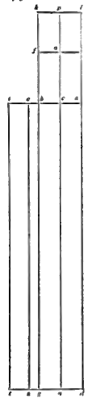
of fk to ca is as a number to a number. Wherefore fk is commensurable with line ca. Let surface dk therefore be divided into four rectangular surfaces go, ol, do, and ok. And since gb and bf are numbers, the whole gf is a number. For line fo is also a number, being equal to line bc. Wherefore surface go is rational: and since fk is commensurable with line ca, line op is also commensurable with line ca, being equal to line fk. Wherefore surface ol is rational. Therefore surfaces go and ol are a number. Again, since no and of are numbers and fk is commensurable with ca, surfaces do and ok are commensurable. Wherefore surfaces do and ok consist of roots commensurable with each other, since no and of are numbers, and they can be gathered and reduced to one root; for when roots commensurable with each other are gathered together, from their gathering there issues the root of a number only: therefore the whole surface dk consists of a number and a root; to which surface de is equal, since surface zb is equal to surface bl. Therefore surface de also consists of a number and a root: similarly surface et also consists of a number and a root, since it is the double of bk. Wherefore the whole surface di consists of a number and roots; therefore space di is not a number, since it is of two or more terms. Therefore line ab is not one of the four binomials composed of a number and a root. But if it be possible, let line ab again be the third or sixth binomial, namely composed of two different roots, whose terms let again be bc and ca. Wherefore from ba by itself comes a first binomial, which is bk; which being multiplied by ba produces space bl, which is equal to cube bz. Wherefore the whole surface dk, namely surface daeg, consists of the product of gk by kl, that is, of a number and a root multiplied by two different roots. For kl is equal to line bca. But when a number and a root are multiplied by different roots, surely different roots come forth. Wherefore the whole surface de consists of different roots. But surface et consists of a number and a root, namely the double of bk. Wherefore the whole surface di consists of a number and roots; which is absurd, since surface di is \(20\). Therefore line ab is not a binomial. Similarly it will be shown that it is not any of the six apotomes written above. For if line ab were an apotome, by the same demonstrations that were shown for binomials, it will be shown that the whole surface di consists either of a number minus roots, or of roots minus a number, out of which \(20\) can never be produced. I say again that line ba cannot be of the roots of binomials or apotomes: for it has been shown that line ab cannot be a binomial or an apotome. Wherefore ab will not be the root of the first binomial or of the first apotome, since the root of the first binomial is a binomial and the root of the first apotome is an apotome.
But if it be possible, let line ba be the root of the second binomial. Therefore it will be a first bimedial; whose terms let again be bc and ca, and again from the multiplication of ab by itself let the number bk come forth, which is a second binomial, whose lesser term let be bh, which is a number. Wherefore the whole gk consists of a number and a root. Therefore when gk is multiplied by kl, that is, by ba, whence comes surface de, which is equal to surface dk, then a number and a root are multiplied by the root of a number and a root; from which multiplication comes the root of a number and a root; and that multiplication is made thus: the square of number gk is multiplied by number bk, whose root is what is sought. Therefore surface de is the root of a number and a root; and surface et consists of
f. 0241 · p. 234a number and a root, since it is the double of number bk. Therefore the whole surface di consists of a number and a root, and of the root of a number and a root; from whose conjunction a rational number can never be produced.
Wherefore it is impossible for line ab to be the root of the second binomial; nor will it be of the fourth or fifth binomial; which is shown by the same demonstrations, since those binomials likewise consist of a number and a root. But if it be possible, let line ab be the root of the third or sixth binomial; and let ab be multiplied by itself, and let bk come forth, which is composed of the roots of two different numbers. Wherefore the whole gk is of three terms; which being multiplied by kl, namely by the root of number bk, there will come forth the root of the root of a number and of roots for surface de: but surface et consists of two roots. Wherefore the whole surface di is irrational. Therefore line ab is not the root of any binomial. Similarly by the same demonstrations it will be shown that line ab is not the root of any apotome; for if it were the root of the second or fourth or fifth apotome, surface de would be the root of a number minus a root, or the root of a root minus a number, namely that surface de would be the root of the second or fourth or fifth apotome; and surface et would be a number minus a root, or a root minus a number; which together by no means make a rational number. Similarly if line ab were the root of the third or sixth apotome, surface de would be the root of the root of a number minus the root of roots, or it would be the root of the root of roots minus the root of a number; from which with surface et a rational number could in no way come forth. Therefore line ab, as has been demonstrated, is not any of the fifteen lines of which mention is made in the tenth of Euclid, as I said before. And because this question could not be solved in any of those written above, I strove to reduce its solution to an approximation. And I found one of the ten named roots, namely the number ab, by approximation, to be one and twenty-two minutes and seven seconds and forty-two thirds and thirty-three fourths and four fifths and forty sixths.